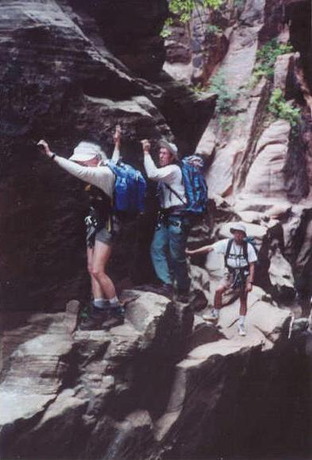

Canyoneering Blitz May 26-June 3 2001

Here's the list of who went on the trip:
- Bill Fallon
- Seth Hennessee
- Sheri Kenly
- Rich Kocher
- Mark Lucas
- Rogil Schroeter
- Kathy Sharp
- Jef Sloat
Introduction
Kathy: For our 2001 canyoneering blitz, we decided to do a bunch of slot canyons at Zion National Monument. The new tram system at Zion was great and even helped us do our hikes! (In contrast, the Grand Canyon tram schedule prevents us from doing some hikes we'd like to do.)
I'll probably put some more updates in this trip report after the PEAC Newsletter deadline.
Day 0 - Thursday, May 24, 2001: Rogil and Seth begin Drive to Zion
Seth: I finish work and pick up Rogil. We sleep at a motel in Page & get going early.
Kathy: Since we were starting our trip on a holiday weekend, we would have had no hope of getting a campsite in the park if Rogil and Seth hadn't gone up early. They got us two sites in the South Campground inside the park. This turned out to be incredibly convenient since we were within walking distance of the Backcountry Office, which we visited every day to get our permits.
We had 8 people, which is the maximum party size allowed in the campground, even though the maximum group size for hiking is 12. This is strange because, technically, according to the posted rules, a group of 12 hikers cannot camp in the same campground, since splitting of groups across campsites to meet the 8-person limit is not allowed!
Day 1 - Friday: Rest of Gang Drives to Zion
Seth: Hiked up angels landing with Rogil. I really deserved to be reminded, "a fed squirrel is a dead squirrel," but I know those precious few almonds built bridges of understanding between our two species and gave the rodent brotherhood the opportunity to experience, sharing and caring. Next the walk to the Temple of Sinawava allowed for the emergence of "the nerd look." Rogil's lens popped out of her glasses and we faced the option of rigging tape or bread sac wire. She discretely chose to strip the bread sac wire and the glasses were repaired.
Day 2 - Saturday: Pine Creek
Seth: Pine Creek was hiked and rappelled by all of us. Park etiquette remonstrates "quiet as you do the narrows" of any canyon. The men screamed and yelled as our parts shrunk in the cold water. Rich did his flying wetsuit trick at the last rappel, bravo.
Rogil: I'd recommend on future Pine Creek hikes to stay in the wash on the way back to the cars, just so you can take an occasional dip to keep cool.
Pine had the worst rappels. They were all undercut, no place for feet at the start of each. One rappel though was exceptional. There were all kinds of windows carved in the walls there.
For this & Echo Canyon, wetsuits are mandatory & wetsuit-socks too.
Kathy: A permit is required for this canyon, but the number of hikers is not limited. Someone from St. George, Utah, doing the hike with another group, said the water level was the highest she'd ever seen it in that canyon. Sheri and I took off our shoes for lunch, even though there was no place to warm our feet, because our feet hurt so bad from the cold water. This canyon had less ice-cold water than Echo Canyon, though.
Day 3 - Sunday: Behunin Canyon
Seth: Behunin and its beauty also tested us in several ways with its diverse characteristics. The approach was long winded. A few people did not like the slick rock bypass around the manzanita barricade. Our group intelligence was negligent to stop leaning and sitting on a huge boulder sitting on three small eroded feet. It could have moved and killed someone at the double tree rappel. I still think we should have dunked the witch. I stressed out on the short traverse (see photo above) and am still blaming my heavy bulky pack. After someone disconnected the webbing strand I clipped into while rigging the second to last anchor I retaliated by cutting out rotten strands while that someone rappelled on the other good strands. Rogil took the time to instruct the group who waited behind us at the last rappel on what prussiks are used for and why all of us carried them! As we departed the area for the trail out, a large stone was trundled by Mark that made a crushing noise.
Rogil: Behuin was spectacular. The rappels were almost all 2 rope raps. Not a place to be if there is any chance of rain. The approach hike was stiff, but very beautiful.
Kathy: This canyon had 10 rappels and at least 2 were full 50-meter rope lengths! We hiked up the West Rim Trail till we emerged from a foresty area, then some Manzanita, and then we were hiking toward the base of a huge, white vertical cliff. It looked like the trail just ended there, but it went up to the right. Instead we scrambled down to the left, into the top of Behunin.
At the bottom of one of the rappels was a pool that Rich was able to jump (right around the corner from the above photo). He highlined the rest of us over it! He had the end of the rope, we attached our waist 'biner to the rope, he pulled the rope tight, and we floated to the other side. Seth noticed that this action was reminiscent of witch dunking and suggested that, rather than give the last person a nice dry ride, we should give her a dunking.
The second-to-last rappel in this canyon should be done as two rappels. Our group, the group after us, and another group we know that went later all got our ropes caught while pulling them in this place. Although tugging hard worked in each case, it's probably safer to just set two rappels that can be pulled cleanly.
At the end of the canyon, we emerged from a crack in the cliffs above the Emerald Pools on a full-rope-length rappel. Spectacular!
Day 4 - Monday: Echo Canyon
Seth: Middle Echo canyon proved once again that group intelligence can lead to over confidence and error. Remember, we ascended several hundred feet above the canyon before we realized "the map labeling was different; it is the Cable Mt. turn off." We split into two groups and remerge without the use of FM radios. Echo canyon was short, but the coldness brought out a little gasp from all of us. I wonder what kinds of illness would result if you let too much of that water get inside you? I still say I felt like a beached whale after I got up on that notch we passed between rappels 3 & 4. Too bad Sheri passed on this one. Mark left later that evening.
Rogil: On future Echo Canyon hikes, on the 3rd rappel, it would be better if 2 people cross the pool above the rappel before the 1st one goes down. As both will be needed to lift one of them out of the next pool. It might also be better if the 1st one is small & the second one tall, but not too heavy.
Kathy: We had two delays in starting this canyon. First, our description from Tom's Utah Canyoneering Guide (a website) called the Cable Mountain Trail the Echo Canyon Trail. Then, after we split in two, the first group went way past the described canyon entrance (they were going by memory of the description) and sat waiting for the rest of us. When we arrived, we had no clue where the first group was, and we didn't hike far enough further along the trail to find them. Fortunately, a ranger happened along and told us where the others were.
This canyon had stinky water and the top part had a lot of icy cold water (imagine the smell if it warmed up!), and in the place that Rogil and Seth mention, there was a pool above a rappel into another pool. To save time, Rogil jumped in the top pool as soon as Seth got on rappel and this sent a torrent of the ice cold water over Seth's head. When Seth swam across the pool at the bottom of that rappel, he found he couldn't get up the other side. Seth is a big guy and Rogil is a small gal, so you can imagine what a funny sight--if the water wasn't so painfully cold--it would have been to see Rogil swimming for all she's worth trying to push Seth up the other side.
If you want to take someone for some very easy canyoneering, you can walk right into the bottom of Echo Canyon from the East Rim Trail and not go far to get to very nice narrows. You might have to do some easy wading through murky water, but the water's not icy at that end.
Day 5 - Tuesday: Zion Narrows
Seth: The Zion Narrows is remarkable. Although requiring no technical skill or equipment, there was no shortage of beauty and challenges. My only regret was busting my ass on the corner of the ledge. Best strategy is to stay in the water and don't go high. Rich summed it up, "I just stayed on one side of the canyon no matter what and made better time." If ranger Eric does it in five hours he must not be normal.
Rogil: Next time I do the Narrows hike, I will just expect to swim. It will take a lot less time if the pools are not avoided & I just let myself float in some of the stiffer currents.
Kathy: We got a 3 a.m. ride to the top end of the canyon from a private company and started hiking at 4 a.m., reaching Chamberlain's Ranch, the official start of the hike, at 4:30. Our driver said we were the first people to hike the narrows this year. The water level has to get down to a certain level before hikers are allowed in; usually the date is around Memorial Day, but it can be as early as mid-May or as late as mid-June. However, we saw a set of footprints that made us think we weren't first.
Speaking of footprints, we also saw a lot of very fresh bear tracks in the wet mud at the edge of the river in the top half of the canyon.
I had done this hike before, but I'd totally forgotten much of the top end of the canyon. The rocks in the bottom of the river don't get real slippery till the other creeks start feeding into the river.
The ranger Seth mentions said that he's able to go so fast because he's done the hike so often, and because he doesn't look where he's putting his feet. He just places his foot in the water, lets it slide till it stops, and then stands on it. We later heard third-hand that this ranger is legally blind. Sheri asked him to take a photo of us. I wonder how that photo turned out.
The hike took us 13 hours.
Day 6 - Wednesday: The Subway
Seth: The Subway was done by the fantastic four. I rested and had breakfast with Jef and Sheri at the Zion Lodge before they left for home. I commend Rogil, Kathy, & Bill for helping Rich get out of the Subway after dislocating his shoulder. They gave it all for the canyoneers! Rich now has the orthopedic brace to fit the boast of "I can do that with one hand..." enough said. Bill left the next morning after the breakfast coffee ritual.
Kathy: Rich got past all the technical stuff and had gotten down past a long, slippery waterfall when he managed to step both feet onto an incredibly slippery surface. Just when you think it's safe to walk normal! Bill, the fastest of us, ran ahead to call for help, worrying that Rich might go into shock. Rich hiked with his terribly painful shoulder for over three hours. He has such incredible balance; he's the only one of us who could possibly have done that hike with no hands. We were just hiking along the creek; there is no maintained trail.
On the very steep hike up from the creek, Rich left Rogil and me in the dust! The rangers Bill had gotten to hike in to rescue Rich were extremely pleased when they ran into Rich less than 5 minutes into their hike. They had been expecting an all-night rescue. Bill and Rogil took Rich to the hospital in St. George, and I went back to camp to let Seth know why we were overdue.
Day 7 - Thursday: R&R
Seth: Us remaining four rested, ate lunch out and went to a movie. Later we returned to the Back Country Office to harass the rangers. Much to my delight while researching what to do as a group of three a cancellation came in for the Subway. The next day's hike permit was issued. Ranger Vid said how happy he was to have met Rich just minutes below the exit trail head the day before instead of pulling an all niter. We promised to be good and not get into anymore trouble. We spent the rest of the afternoon scheming how to beat paying an additional gate fee.
Day 8 - Friday: The Subway, Take 2
Seth: The Subway went smoothly. I botched a few photo opportunities of a big trout in a pool and a couple of show off lizards during the last part of the hike. We did not find the fossil dinosaur tracks. When we arrived at the truck, Rich had secured Kathy's cell phone and my water bottle in my truck that we forgot to leave behind. Thanks Rich. We stopped at a farm stand type store on the way back to camp The fruit and bread was great. Rich got 0.09 oz from a 6.5 oz bag of jalopeno chips I devoured before arriving.
Kathy: The Subway is well worth doing twice. Ranger Cindy had given us great directions for our first trip. We had been wondering where we needed to depart from the trail marked Subway Route to get into the canyon. However, the trail went directly into the canyon. Seth didn't enjoy getting through "Fat Man's Misery," assuming that refers to the little waterfall before the place where you have to take off your pack to get through the narrow opening under a chockstone. Sometimes the water level is too high for that and you can bypass this by climbing up the left side of the canyon. Rich probably didn't enjoy this extra rest day all that much.
Day 9 - Saturday: Drive Back to Phoenix
Seth: We departed Saturday morning driving Rich's BIG chevy scottsdale pickup truck and seth's tiny S-10 blazer suv. All went well until my blazer repeatedly died between Page and Flagstaff. Fortunately, AM/PM towing and repair installed a fuel pump and we were back on the road after a three hour delay in Flagstaff. The waiting area had a cool photo album showing numerous wreck sites of highways carnage, including collisions with elk and a bear.
Day 10 - Sunday: R&R
Seth: I slept in late till 7am and inspected, cleaned, & repaired gear. Took a nap and then got up to do more gear maintenance. I'm still cleaning up sand and licking my wounds but looking forward to the next adventure of the canyoneers.
Kathy: 7 a.m. is sleeping late?! I think I slept till 2 or 3 p.m.
Conclusion
Rogil: I guess Rich should consider the trip a success, as he never did pay the entrance fee, which was his main goal.:o)
Kathy: Another great Utah canyoneering trip!
Generated Sat Jan 29 16:52:58 2005